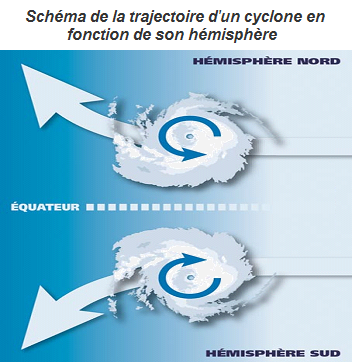

Description
 Les ouragans, cyclones et typhons sont trois noms pour désigner un même phénomène : les cyclones tropicaux. Ce phénomène tourbillonnaire dévastateur est caractérisé par des vents très violents tournant autour d’une zone calme, l’œil du cyclone. Les cyclones tropicaux prennent différents noms en fonction de l’endroit du globe où ils se produisent. On parle d’ouragan dans l’Atlantique Nord et le Pacifique Est, de typhon dans le Pacifique Nord-Ouest et de cyclone dans le Pacifique Sud-Ouest et dans l’océan Indien.
Les ouragans, cyclones et typhons sont trois noms pour désigner un même phénomène : les cyclones tropicaux. Ce phénomène tourbillonnaire dévastateur est caractérisé par des vents très violents tournant autour d’une zone calme, l’œil du cyclone. Les cyclones tropicaux prennent différents noms en fonction de l’endroit du globe où ils se produisent. On parle d’ouragan dans l’Atlantique Nord et le Pacifique Est, de typhon dans le Pacifique Nord-Ouest et de cyclone dans le Pacifique Sud-Ouest et dans l’océan Indien.
Ces cyclones tropicaux se forment tous au-dessus d’une surface d’eau chaude (plus de 26°C sur 50m de profondeur), presque exclusivement sur des océans situés aux tropiques. Cette eau chaude va s’évaporer et former de nombreux cumulonimbus, cette chaleur sous forme de vapeur est à la source de ce phénomène. L’air chaud de l’océan va s’élever avec la vapeur d’eau et engendrer des courants ascendants qui vont créer une zone de basse pression au niveau de l’océan. Les vents du secteur vont alors vouloir rejoindre cette dépression créée, mais à cause de la force de Coriolis de la Terre, ils vont engendrer un mouvement tourbillonnaire autour de cette dépression qui ne va pas cesser de s’accroître, jusqu’à former un cyclone.
Les trajectoires des cyclones, ouragans et typhons sont assez bien définies. Leur trajectoire parabolique dépend principalement leur son sens de rotation. C’est la direction des vents lors de leur formation qui détermine celui-ci : ainsi les ouragans et typhons de l’hémisphère nord ont un sens antihoraire et se déplacent vers le Nord-Ouest alors que les cyclones de l’hémisphère sud ont un sens horaire et se déplacent.
Ce phénomène tirant son énergie de la chaleur de l’eau, il se dissipe assez rapidement (en quelques heures) s’il survole des terres ou une zone d’eau froide.